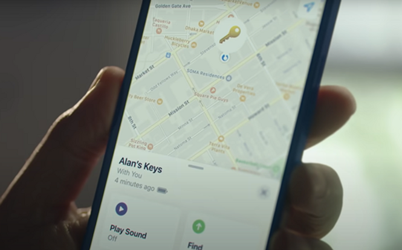

Introducing AirTag
By: Echo

Apple’s spring loaded event was successfully held in April 2021. In addition to releasing some popular product updates, Apple officially revealed a new product ---AirTag. This creative advertising conducts successful strategic communication with the consumers, the main stakeholder group, through three strategies.
1. A scene that happens to everyone in daily life, making the audience feel more engaged.
At the beginning of the ad, when Allen, the protagonist of this ad, wanted to go out, he suddenly found that his key was missing. He started searching all the corners of the room, but he couldn't find them anywhere. Seeing this, I suddenly thought of the same situation that I couldn't find my keys and wallet one day when I want to go outside. I start to get interested in how Alan found the keys. At this time, Alan took out his mobile phone and opened the software, which showed the location of Alan's keys. The function of AirTag is clearly shown here.
2. Use the rhetoric of hyperbole to vivid explain the features as well as benefits of AirTag to the audience
Following the source of the sound, he rummaged through the gap in the sofa to find the keys, a wonderful journey has begun. A bit like Alice's Adventures in Wonderland, there is also a wonderful world in the slit of the sofa. Alan first found some nuts and a pile of coins here, and he also saw a cat and an MP3 that had been lost for a long time. This scene is like when we were looking for something, we couldn't find the one we were looking for, but found out a lot of other things we lost before. At this time, Alan opened the software again, which instructed Alan to walk 15ft ahead. This is obviously a feature of AirTag, which can indicate an accurate distance and direction. Finally, Alan found the key in a hole. Interestingly, before finding the key, Alan first touched some mushrooms, which shows that if there is no AirTag, Alan may not find the place for a long time. This is also a benefit of AirTag. The benefit of AirTag shown in the ad help consumers creates an emotional connection to AirTag (Indeed Editorial Team 2021).
3. Realize Internet marketing through communication under the method of word-of-mouth.
Based on Apple's strong brand influence, this advertisement was widely spread on the Internet by virtue of its ingenious creativity, sparking discussion among netizens. This video was shared with me by a friend. At present, this ad has been viewed more than 6 million times on YouTube. After watching the video, one of my friends ran to buy four AirTags. She said that this advertisement reminded her of the memories that she always lost things at home. She also wants to put one on her daughter so that she can quickly find her daughter while playing in the playground.
In general, this creative advertisement uses the rhetorical of hyperbole to demonstrate the function and usage of AirTag vividly through a situation that we usually encounter in our daily lives, and conduct a successful strategic communication with the main stakeholder group through Internet marketing communication under the method of word of mouth.